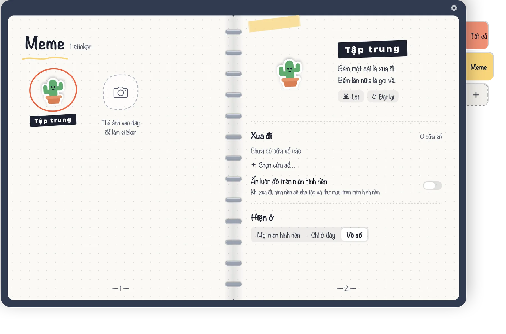

Cuốn sổ sticker cho màn hình nền máy Mac
Bấm sticker một cái. Cửa sổ biến mất.
Dán Shoo lên màn hình nền và chỉ cho nó biết sẽ lo những ứng dụng hay cửa sổ nào. Bấm một cái, tất cả biến mất; bấm lần nữa, mọi thứ trở lại đúng chỗ cũ.
Tải về trên Mac App Store


Mỗi sticker lo một phần của trang này. Bấm thử một cái.
Một cái bấm. Màn hình gọn gàng.
Thử xem: chọn một tình huống rồi bấm vào chú quỷ nhỏ.
Biến nó thành của bạn
Biến bất kỳ tấm ảnh nào thành sticker — chú chó của bạn, bạn bè, meme yêu thích — và giao cho mỗi sticker một việc riêng.

Kéo một tấm ảnh vào sổhoặc chỉ cần bấm vào ảnh
- Thả ảnh vào, Shoo cắt ngay trên máy Mac
- Xếp sticker vào thẻ phân mục và màu riêng
- Mỗi sticker giấu nhóm cửa sổ của riêng nó
Nhìn là biết cửa sổ nào do sticker trông coi
Khi một cửa sổ do sticker trông coi nằm trên cùng, Shoo dán một mẩu băng washi ở góc trên bên trái, màu nhạt theo sticker đó. Thử đổi kiểu xem sao.

Băng washi: có sẵn miễn phí. Bạn có thể tắt ở mục “Dấu trên cửa sổ” trong phần cài đặt.
Cách dùng
Ba bước, không có màn hình cài đặt rườm rà.
Bóc một sticker
Kéo một sticker ra khỏi sổ và thả ở bất cứ đâu trên màn hình nền.
Chỉ ra cửa sổ
Chọn “Chọn cửa sổ…” rồi bấm vào những cửa sổ hay ứng dụng mà sticker này sẽ lo.
Bấm. Xua!
Bấm vào sticker để giấu hết. Bấm lần nữa để gọi về.
Những chi tiết nhỏ dễ chịu
Mọi thứ diễn ra ngay trên máy Mac, trong cuốn sổ.
- Một cửa sổ hay cả ứng dụngSafari, Chrome và Ghi chú ẩn được riêng từng cửa sổ; các ứng dụng khác sẽ ẩn cả ứng dụng.
- Ẩn luôn đồ trên màn hình nềnKhi sticker đang xua, hình nền của bạn sẽ che các tệp trên màn hình nền.
- Mọi màn hình nền hay chỉ ở đâyĐặt sticker trên mọi màn hình nền, hoặc chỉ để ở một màn hình.
- Chỉnh ngay trong sổĐổi tên, đổi kích thước, xoay hay lật sticker ngay tại chỗ.
- Không chiếm chỗCho Shoo hiện trong Dock, trên thanh menu, hoặc ẩn biểu tượng ở cả hai nơi. Bật “Mở khi đăng nhập” là Shoo có sẵn khi máy Mac khởi động.
- Mười một ngôn ngữEnglish, Español, Deutsch, Français, Português, Tiếng Việt, 繁體中文, 简体中文, 日本語, 한국어, ไทย.
Bắt đầu miễn phí
Chú quỷ nhỏ là của bạn, miễn phí, đủ mọi tính năng. Phần còn lại mở khóa một lần, không đăng ký theo tháng.
Miễn phí
Chú quỷ nhỏ màu đỏ
- Mọi tính năng trên một sticker
- Ẩn cửa sổ, ứng dụng và đồ trên màn hình nền
- Đủ mọi ngôn ngữ
- Dấu trên cửa sổ bằng băng washi
 Mở khóa tất cả
Mở khóa tất cả
Mua một lần
- Thêm 5 sticker vẽ tay
- Sticker làm từ ảnh của bạn
- Thẻ phân mục và màu riêng
- Bao nhiêu sticker cũng được
- Thêm 3 kiểu dấu trên cửa sổ: sticker nhỏ, đường khâu, phát sáng

Màn hình nền vẫn là của bạn
- Không tài khoản, không quảng cáo, không theo dõi
- Sticker và cài đặt nằm yên trên máy Mac
- Ảnh được cắt ngay trên máy Mac, không tải lên đâu cả
- Shoo chỉ ẩn và hiện những cửa sổ bạn chọn; không bao giờ đọc nội dung bên trong
Câu hỏi
Vì sao macOS hỏi có cho Shoo điều khiển Safari, Chrome hay Ghi chú không?
Đó là cách Shoo ẩn riêng một cửa sổ của các ứng dụng này. Shoo chỉ nhờ ứng dụng ẩn hoặc hiện đúng cửa sổ bạn đã chọn. Nếu bạn không cho phép, Shoo sẽ ẩn cả ứng dụng.
Mình có ẩn được mọi cửa sổ của bất kỳ ứng dụng nào không?
Được. Ứng dụng nào cũng ẩn được cả ứng dụng. Ẩn riêng một cửa sổ thì dùng được với Safari, Chrome và Ghi chú.
Có phải trả phí hằng tháng không?
Không. Shoo miễn phí với sticker chú quỷ nhỏ. Mở khóa tất cả là mua một lần.